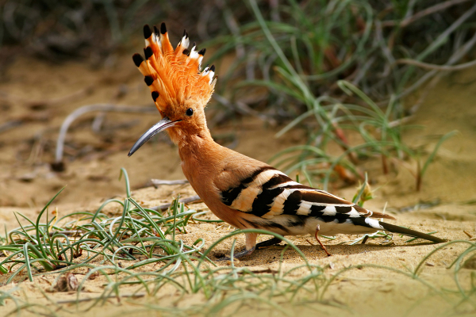

İbibik kuşu (Upupa epops), Avrupa, Asya ve Afrika’da görülen, uzun ince gagası ve başındaki taç biçimli tüyleriyle tanınan çok özel bir kuş türüdür. Ortalama 25–30 cm uzunluğa ulaşan ibibikler, turuncu-kahverengi gövde, siyah-beyaz kanat desenleri ve dikilip açılabilen “ibik” tüyleriyle dikkat çeker. Uzun ve kıvrık gagaları sayesinde toprakta böcek, larva ve küçük omurgasızları arayarak beslenirler. Doğal yaşam alanlarında açık araziler, bahçeler ve orman kenarlarında görülürler; yuvalarını genellikle ağaç kovuklarına veya duvar aralıklarına yaparlar.